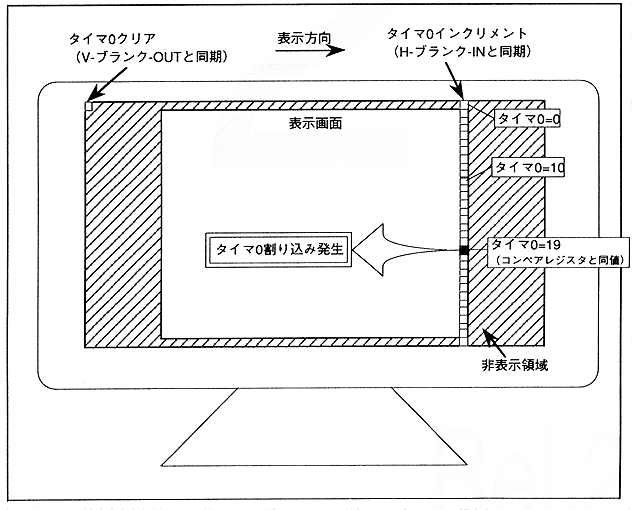

The value is cleared when a V-blank-OUT interrupt is received, and is incremented when an H-blank-IN interrupt is received. Compared to the timer 0 compare register (see register details), a timer 0 interrupt is generated when the values are the same. Figure 2.12 shows the timer 0 generation process.
Figure 2.12 Timer 0 interrupt generation process (example when compare register = 19)
